Week7
we have large margin classification, kernals, SVMs in practice
SVM - support vector machine
Optimization Objective
amount of data , algorithms used
very powerful algo - support vector machine - cleaner in terms of nonlinear functions
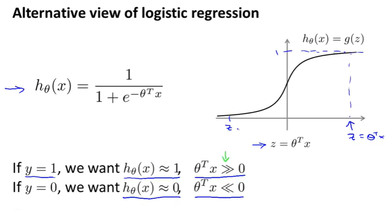In case of y=0 ,
The purple curve is pretty close appox of the sigmoid curve shown
this purple curve gives a logistic regression and helps alot with the SVM
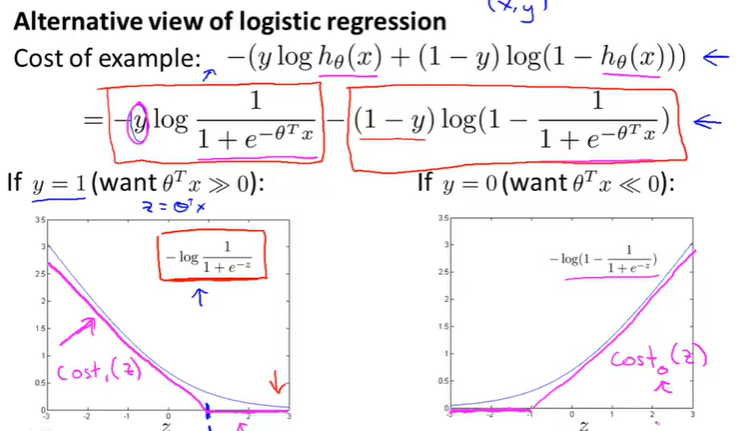for svm we paramertized sightly differently, at lambda
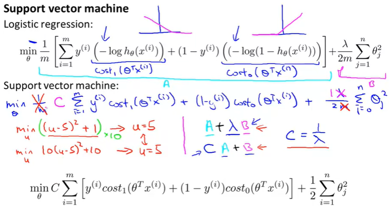unlike logistic regression, the support vector machine doesn't output the probability is that what we have is we have this cost function, that we minimize to get the parameter's data, and what a support vector machine does is it just makes a prediction of y being equal to one or zero, directly. So the hypothesis will predict one if theta transpose x is greater or equal to zero, and it will predict zero otherwise and so having learned the parameters theta, this is the form of the hypothesis for the support vector machine.
Large Margin Intuition
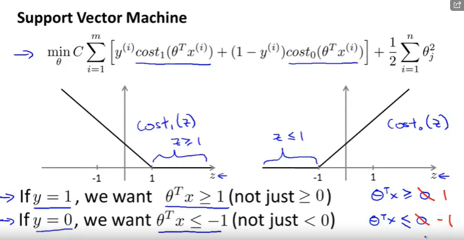set C as very large value
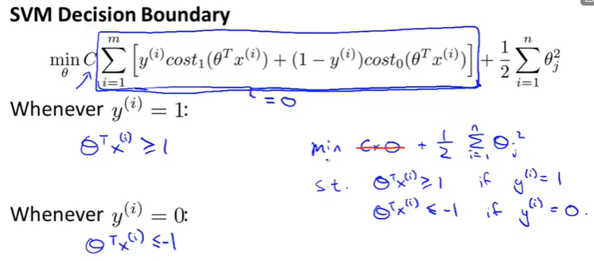how does this large margin classifier end from the above formula
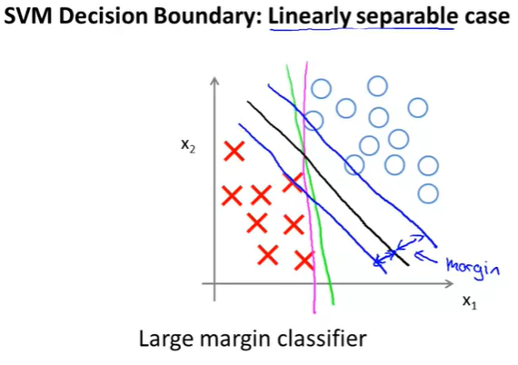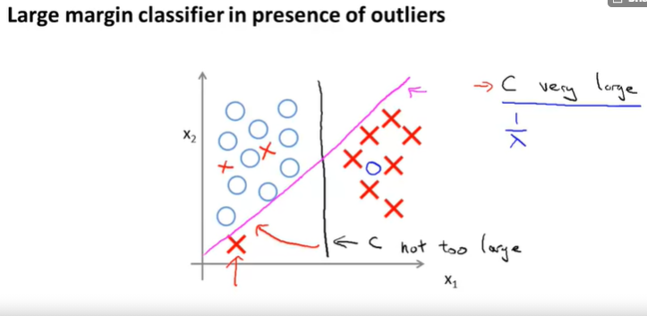 I hope that gives some intuition about how this support vector machine functions as large margin classifier that tries to separate the data with a large margin, technically this picture of this view is true only when the parameter C is very large, which isa useful way to think about support vector machines
Mathematics behind large margin classification
inner product
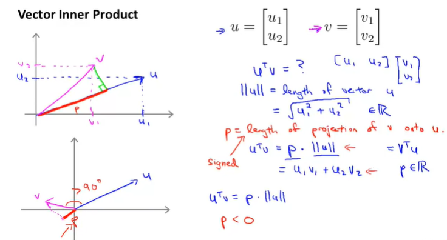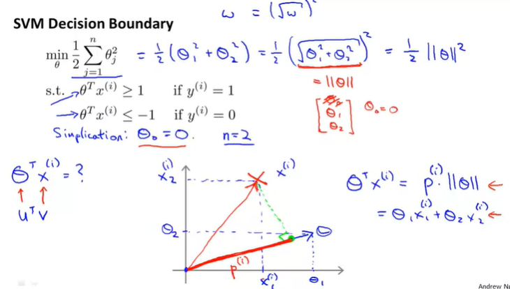|| theta || is norm of theta
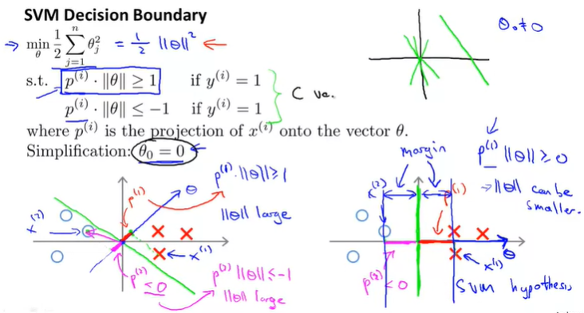Kernel I
adapting the SVMs in order to develop complex nonlinear classifiers
main technique is use kernels
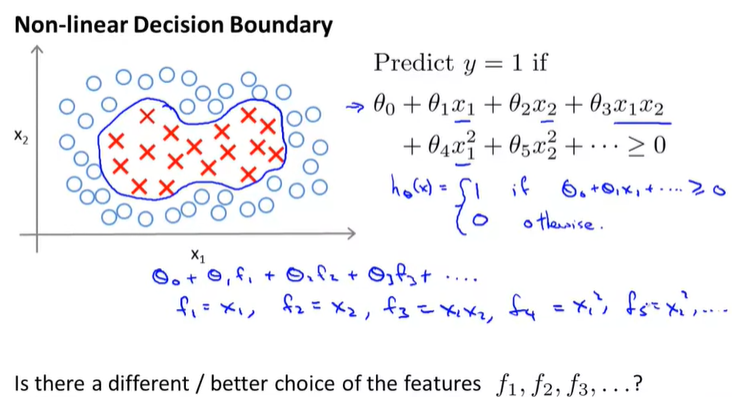Define new examples as follows :
gaussian kernel formula
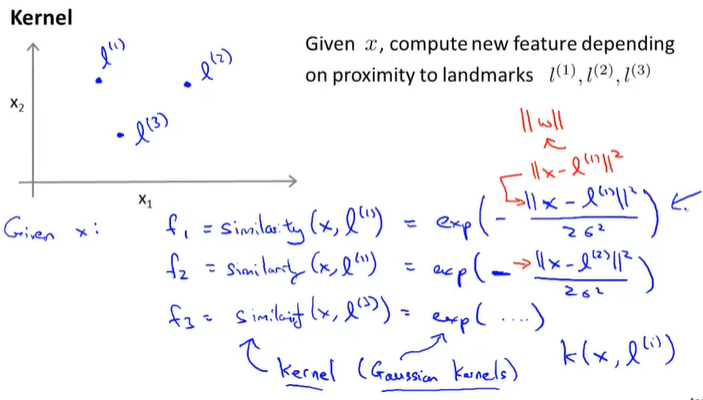l- landmark
the question is, is there a different choice of features or is there better sort of features than this high order polynomials because you know it's not clear that this high order polynomial is what we want, and what we talked about computer vision talk about when the input is an image with lots of pixels.
We also saw how using high order polynomials becomes very computationally expensive because there are a lot of these higher order polynomial terms.
So, is there a different or a better choice of the features that we can use to plug into this sort of hypothesis form
So what these features do is they measure how similar X is from one of your landmarks and the feature f is going to be close to one when X is close to your landmark and is going to be 0 or close to zero when X is far from your landmark.
Each of these landmarks, defines a new feature f1, f2 and f3. That is, given the the training example X, we can now compute three new features: f1, f2, and f3, given, you know, the three landmarks that I wrote just now.
But first, let's look at this exponentiation function, let's look at this similarity function and plot in some figures and just, you know, understand better what this really looks like.
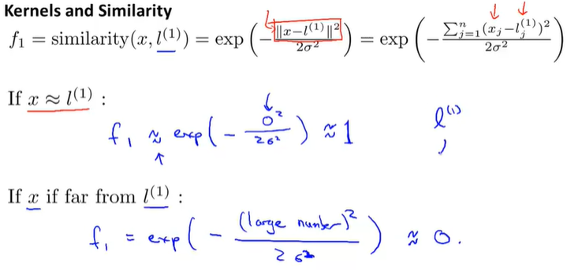Now the other was due on this slide is show the effects of varying this parameter sigma squared. So, sigma squared is the parameter of the Gaussian kernel and as you vary it, you get slightly different effects.
Let's set sigma squared to be equal to 0.5 and see what we get. We set sigma square to 0.5, what you find is that the kernel looks similar, except for the width of the bump becomes narrower.
The contours shrink a bit too. So if sigma squared equals to 0.5 then as you start from X equals 3 5 and as you move away,then the feature f1 falls to zero much more rapidly and conversely.And if sigma squared is large, then as you move away from l1, the value of the feature falls away much more slowly.
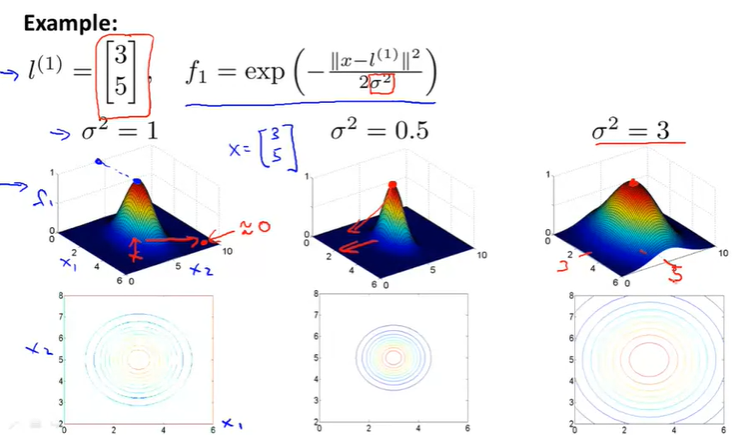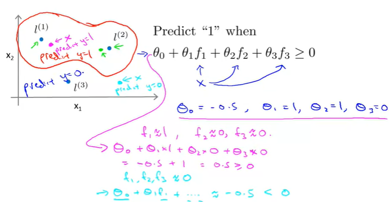We can learn pretty complex non-linear decision boundary, like what I just drew where we predict positive when we're close to either one of the two landmarks. And we predict negative when we're very far away from any of the landmarks. And so this is part of the idea of kernels of and how we use them with the support vector machine, which is that we define these extra features using landmarks and similarity functions to learn more complex nonlinear classifiers.
Kernel II
yes how do we get landmarks
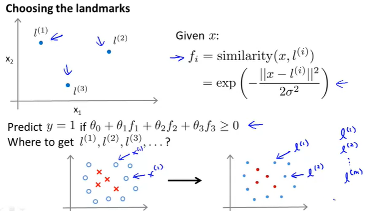similarities
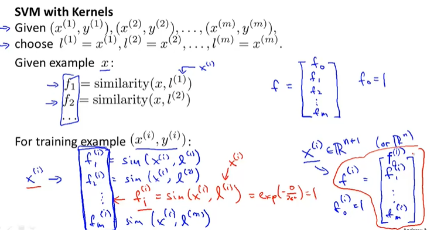 this is the idea here which is that we're gonna take the examples and for every training example that we have, we are just going to call it. We're just going to put landmarks as exactly the same locations as the training examples
When you are given example x, and in this example x can be something in the training set, it can be something in the cross validation set, or it can be something in the test set. Given an example x we are going to compute, you know, these features as so f1, f2, and so on. Where l1 is actually equal to x1 and so on. And these then give me a feature vector. So let me write f as the feature vector. I'm going to take these f1, f2 and so on, and just group them into feature vector
Depending on whether you can set terms, is either R(n) or R(n) plus 1. We can now instead represent my
training example using this feature vector f. I am
going to write this f superscript i. Which is going to be taking all of these things and stacking them into a vector.So, f1(i) down to fm(i) and if you want and well, usually we'll also add this f0(i), where f0(i) is equal to 1. And so this vector here gives me my new feature vector with which to represent my training example. So given these kernels and similarity functions, here's how we use a simple vector machine
So that's how you make a prediction if you already have a setting for the parameter's theta. How do you get the parameter's theta? Well you do that using the SVM learning algorithm, and specifically what you do is you would solve this minimization problem. You've minimized the parameter's theta of C times this cost function which we had before.
Only now, instead of looking there instead of making predictions using theta transpose x(i) using our original features, x(i). Instead we've taken the features x(i) and replace them with a new features
And what most support vector machine implementations do is actually replace this theta transpose theta, will instead, theta transpose times some matrix inside, that depends on the kernel you use, times theta. And so this gives us a slightly different distance metric. We'll use a slightly different measure instead of minimizing exactly the norm of theta squared means that minimize something slightly similar to it. That's like a rescale version of the parameter vector theta that depends on the kernel. But this is kind of a mathematical detail.
That allows the support vector machine software to run much more efficiently.
And the reason the support vector machine does this is with this modification. It allows it to scale to much bigger training sets. Because for example, if you have a training set with 10,000 training examples.
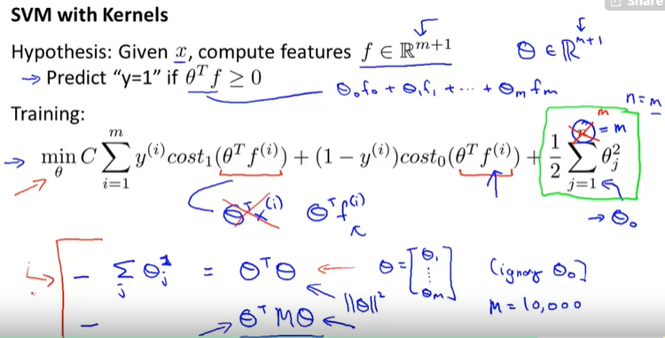bias and variance trade off
When using an SVM, one of the things you need to choose is the parameter C which was in the optimization objective, and you recall that C played a role similar to 1 over lambda, where lambda was the regularization parameter we had for logistic regression.So, if you have a large value of C, this corresponds to what we have back in logistic regression, of a small value of lambda meaning of not using much regularization. if you do that, you tend to have a hypothesis with lower bias and higher variance.
Whereas if you use a smaller of C then this corresponds to when we are using logistic regression with a large value of lambda and that corresponds to a hypothesis with higher bias and lower variance. And so, hypothesis with large C has a higher variance, and is more prone to overfitting, whereas hypothesis with small C has higher bias and is thus more prone to underfitting.
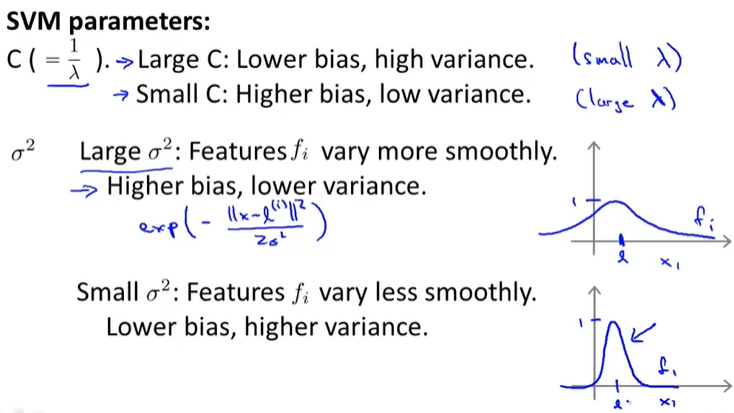Using an SVM
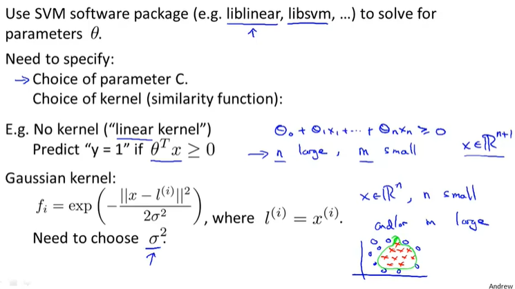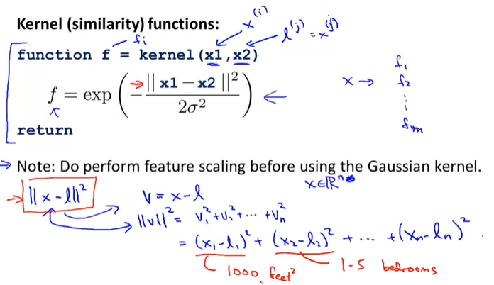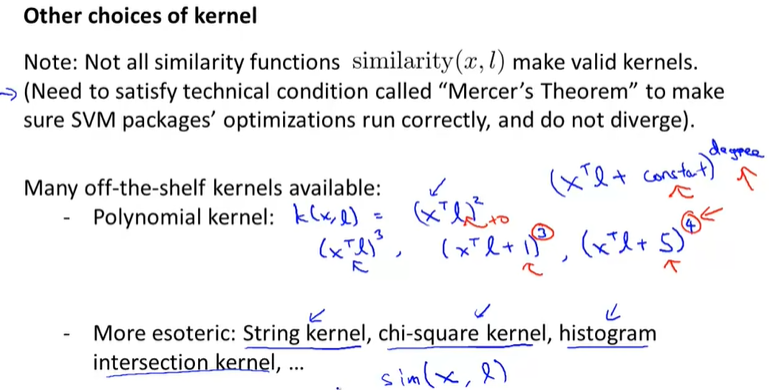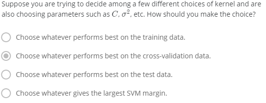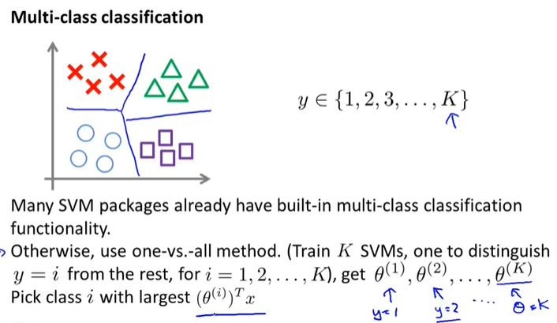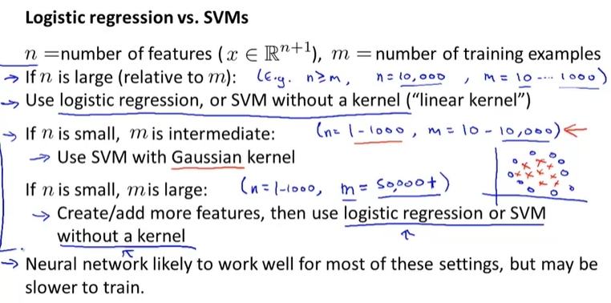